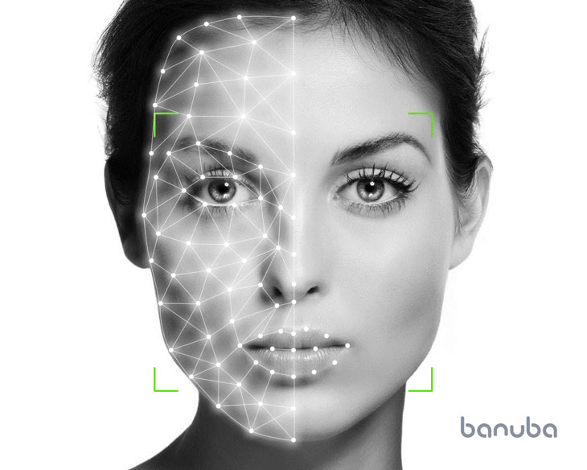
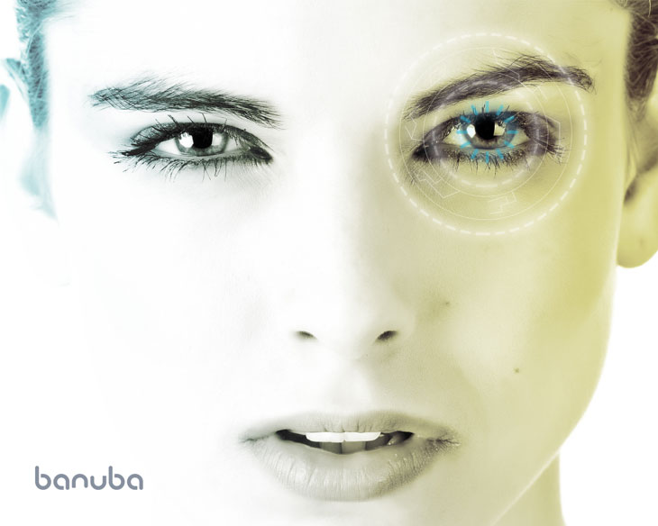
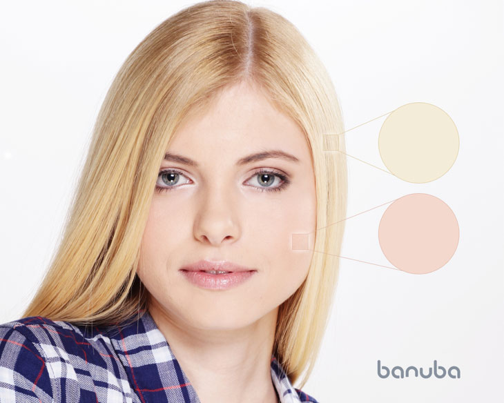
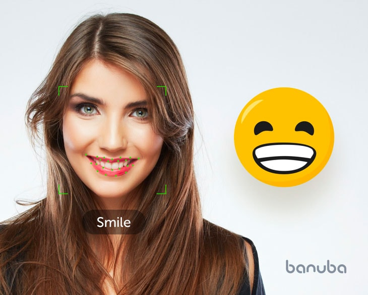

Banuba cutting-edge AR technology for mobile apps
FaceAR SDK
FaceAR SDK incorporates a mix of technologies, including face detection and tracking, eye gaze detection, estimation of distance from the smartphone, recognition of skin and hair color and hair style, and emotion recognition, a synergy that creates substantial user benefits for various applications.
Banuba offers a unique partnership opportunity for up to ten app developers across the world to create AR-enabled products.
The partners will receive:
- Access to Banuba’s mobile AR SDK
- Marketing and business development support
- Funding for a joint venture as needed
Among the first partners to take up the offer is game developer Inventain. Their team has received €1 million to develop their project jointly with us. This initiative is backed by major investors as part of an international programme to develop AI and AR technologies.
The Banuba AR SDK is a unique product for mobile app developers. It is suitable even for constrained devices and combines several advanced technologies:
- 3D face detection and tracking
- 3D face analysis, including detection of skin and hair color, and hair style
- Separation from background objects
-
An integrated 3D math model, which removes the need for 2D point identification
Other solutions create filters by identifying 2D points on the face first, then applying nonlinear equations to create a 3D model of the head.
Banuba technology is different. It establishes a 3D model of the head directly, skipping the identification of 2D points. This makes the solution vastly more accurate. The 3D math model (Face Kernel ™), developed by Banuba, reduces all possible transformations to a limited number of variables.
Meanwhile, direct creation of the 3D model leads to a high degree of precision. This is due to removing the need to perform 2D-to-3D transformation.
-
Datasets tuned to work perfectly with Banuba algorithms
Creating a suitable data set of face structures is a challenge for most providers. For example, some variables are not structured and remain subjective – such the classification of hairstyles.
To create such data sets, Banuba uses complementary systems. Semi-supervised metric learning and generative adversarial networks (GANs) work together. We use hand-crafted, hand-tuned code alongside compilers, harnessing human ability where necessary.
In machine learning, some say, jokingly, that a data set is more important than the algorithm. But this is perhaps not just a joke. Banuba doesn’t use pre-existing data sets – or, to be exact, Banuba uses them only as a part of its own data sets.
This is because some data sets simply don’t exist. Where they do exist, a correctly constructed data set, if tuned to the learning algorithm, can significantly reduce the learning error. To create data sets, Banuba uses semi-supervised learning, a constraint form of active learning and domain adaptation methods.
Today, unfortunately, or perhaps fortunately, taking a data set, using your preferred machine learning method and compiling the result with the “-O3” key is no longer enough to develop a state-of-the-art solution.
Banuba has designed in-house math models to significantly simplify the effort. This cuts the execution time on a smartphone, reduces the learning time for the algorithm, and allows the use of a larger data set, which in turn improves the quality of the operation. Banuba uses a rather unconventional form of deep learning, mixing CNNs and different variations of Random Forests.
-
Optimization for specific architectures, namely Apple A9, A10, A11 CPUs and Android
In addition, Banuba has developed unconventional types of neural network layers, tuned to specific architectures, namely Apple A9, A10, A11 CPUs and Android.
All these features allow the Banuba AR SDK to be supported even by constrained devices, providing effective and fast performance on 90% of smartphones. Last but not least, the Banuba AR SDK will not drain battery like many applications. This significantly enhances the experience of those who use applications built with Banuba AR SDK.
1. 3D Face Motion Tracking
1.1 Face detection and head pose tracking
This technology detects the face and head-pose movements. Once the face has been detected, the algorithm switches to head-pose tracking mode by using the position of the head on the previous image as the initial approximant. If the face is lost, the algorithm switches back to face detection mode.
Based on a directly inferred 3D model of the head (rather than one transformed from a 2D model), the technology is also operable even with a low SNR (signal to noise ratio) and poor lighting conditions. The incorporated model can forecast the appearance of the head in the subsequent frame, increasing stability and precision.
The size of the data set is 300,000 faces.
Features
- High performance (60 fps)
- High quality
- Extreme angles, ranging from –90 to +90
- Efficient operation in poor lighting conditions
- Operation with even with obstructions of up to 50% of the face
- Stable detection and resistance to partial obstructions of the face, including glasses and complex haircuts
- Depending upon needs, a 3D model of a face with 64 to 3,308 peaks is created
- Supports 360 degrees rotation of the smartphone camera
- Estimation of distance from the smartphone
Eye tracking and gaze detection
Thanks to this technology, it is possible to both “track” a person’s gaze, and control a smartphone’s function with eye movements. An algorithm detects micro-movements of the eye with subpixel accuracy in real-time. Based on that data, a vector of movement is created.
Banuba’s face recognition algorithm helps to measure the distance to various points on a scanned surface with a high degree of precision and to detect its shape. It can detect, for instance, whether the user’s eyes are open or closed.
Features
- High degree of precision
- Eye pupil detection and tracking
- Eye states: open & closed
- Eye blinking
- Attention tracking
Facial motion capture
Face Motion Capture involves scanning facial movements and converting them to computer animation for movies, games, or real-time avatars. It can operate either in the real-time or based on the user’s preliminarily saved data or/and their face-motion models. Derived from the movements of real people, the technology results in more realistic and nuanced computer character animation than if the animation were created manually.
Features
- Fast execution – operates in real-time based on at least one or several frames. Each consequent frame may improve the model.
- Can be integrated into the Face Recognition pipeline in order to develop precise models of users combining both visual similarity and the resemblance of facial gestures, emotions and other motion-related features.
3D face motion capture applications
- Face recognition (biometrics)
- Autofocus (photography)
- Unconventional elements of the user interface, games
- Measuring user interaction and engagement with in-app ads
- Behavioral analytics of mobile UI/UX based on eye gaze tracking
- Work style analysis: eyes blinking frequency, analysis of employee attention concentration, estimation of employee type of activity: typing, reading, calculation of onscreen time spent.
2. 3D Face Analysis
2.1 Face segmentation
Face segmentation is a specific computer vision task which assigns labels to facial features such as nose, mouth, eye, hair, etc., to each pixel in a face image. Our face segmentation techniques include complex cascaded machine learning algorithms in combination with color model and Monte Carlo approaches. This leads to precise detection of eyes, their structure (iris, pupil, eyeball, etc.) and the nose, ear, cheek, chin, mouth, lip eyebrow and forehead.
Features
- Access over a convenient API
- Separate parts of the face can be detected for further analysis
2.2 Evaluation of anthropometric parameters
Facial anthropometry refers to the measurement of the individual facial features. Our novel algorithm automatically detects a set of anthropometric facial fiducial points that are associated with these features. This makes it possible to recognize refined facial patterns and recreate detailed semantics, mimics and anthropometrics.
Features and applications
- Access over a convenient API
- Reconstruction of face geometry “cleaned” of mimics
- Creation of caricature avatars in an instant
2.3 Skin and hair color
Banuba has developed a library for detecting hair and skin color for iOS. The area above the person’s forehead is used for hair color detection as it is less sensitive to head’s turns than other areas of hair. The technology recognises sharp intensity patterns above the hairline and analyzes color. There will be no such sharp intensity patterns for bald individuals, so our technology also allows us to detect the lack of hair.
To detect skin color samples are taken from areas of the face that algorithms point to as specifically being face skin.
Features
- Precise color measurement
Applications
- Visual skin color and skin tone correction
- Skin-related disorder detection
- Virtual makeup
2.4 Hair style detection
This technology is based on convolutional neural networks. The learning sample selection consists images of men and women, categorised by their hairstyle. Learning is the process of matching an image with the most relevant hairstyle sample.
Semi-supervised metrics learning was used for the creation of the data set. Subsequently, a GAN was trained for the expansion of the data set, upon which, the final network was trained. To improve quality, a loss function, specifically selected for the task, was used.
Features
- Detecting hair style, hair color
- Changing hair color
- Haircuts of any shape can be detected, regardless of hair length
- The algorithm distinguishes with pixel precision between hair, face and other parts, such as beard, moustache or glasses
- Matting is done with pixel precision. If the background is seen through the hair, it is detected as part of the hair.
Applications
- Virtual hair salon: trying out new hair colors and hair styles
- Detecting hair style for 3D avatar creation
2.5 Emotion and expression recognition
People’s emotions are reflected on their faces, and with the ability to “read a face” it is possible to deliver more personalized content. Our technology allows us to detect six basic emotions; anger, disgust, fear, happiness, sadness, and surprise.
The variables of the model returned by the recognition algorithm can be used either directly, or transformed into parameters for another model, such as Facial Action Coding System (FACS), which detects muscle movements that correspond to specific emotions.
Features
- Real-time detection of anger, disgust, fear, happiness, sadness, and surprise
- Access to a convenient API
- Conversion of data to Paul Ekman's Facial Action Coding System
Applications
- Mood-related content in mobile applications, such as three-dimensional visual masks that reflect users’ feelings while they are communicating in mobile video chats
- Targeted advertisement
- Detection of tiredness and degree of stress
- Use of emotional reactions to a product or content in empathic apps and advertisements
- Creation of human-friendly digital products which react to human mimics
- Detection of emotional states of patients for health purposes (helping schizophrenic patients)
2.6 Face Beautification
This technology is used for creating visually beautified images of users. Anthropometric data and mimics are analyzed and corrected in real time.
Features
- Smoothing of skin
- Correction of face skin tone
- Whitening of eyes and teeth
- Correction of face shape (make it slimmer, wider, increase/decrease eye size, change the shape of the nose and head proportions)
- Change hair color
- Improve face symmetry
- Shape and color eyebrows
- Correction of lip shape
- Virtual makeup
- Face morphing
Features
- Improving the user’s look during video chat
- Cosmetic surgery: ‘Before’ and ‘after’ visual aids during consultation with a patient
- Cosmetics: application of makeup / choosing which makeup product suits consumer
- Demoing effects of face skin products
- Fixing smartphone camera distortions
- Make selfies more attractive
3. Separating user image from the background.
Banuba has developed a library to separate a person’s image from the background for Apple iOS.
This technology can be used for the real-time replacement of backgrounds with both static and animated textures. Backgrounds can be changed into a number of optional presets during video calls or used as an engaging effect in advertising.
The technology is based on convolutional neural networks, with color images as the input and a probability mask showing whether a pixel belongs to the class “person” or to the class “background.” This allows us to ensure high performance and results for real-time backgrounds.
The problem of lack of data sets for separation of objects from the background is resolved by the creation of a small initial data set, which is increased by active learning and subsequent fine-tuning.
A correctly selected data set helps to obtain optimal results and high-quality implementation.
Features
- Augmentation of raw output with classic algorithms for computer vision and signal filtration – lightweight post processing (deletion of small contours, precise definition of borders, additional image recognition).
- Post-processing, including mating, filters and removal of small objects
- Portrait mode and bokeh effect
Applications
- Replacement of an unsuitable background and noise removal
- Animation effects in the background that are changed by the user as part of interactivity
- Animated emotion-related background
- Advertisements
- Adding colors
- Protection of privacy
- 360-degree background 2D and 3D for educational purposes, e.g. for mixed reality
- ‘Hollywood effects’ on a mobile phone
- Replacing backgrounds for practical purposes (e.g. during a business call) or to entertain (e.g. jungle instead of a wall)
- Editing “boring” backgrounds to create perfect videos
- Removing unwanted objects or people from videos